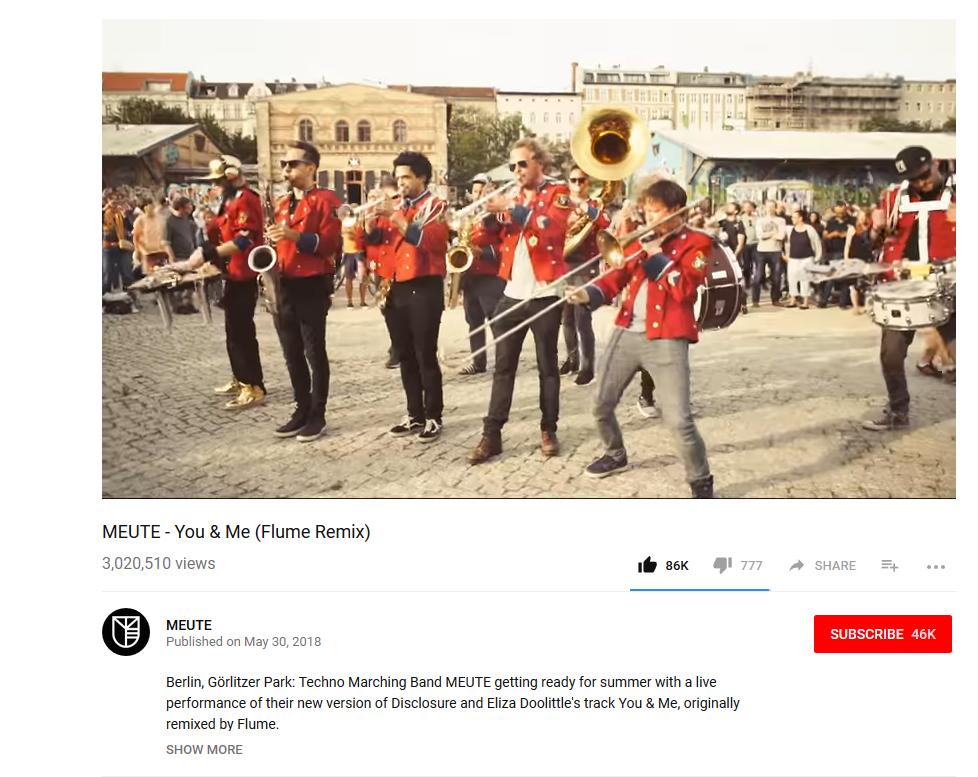
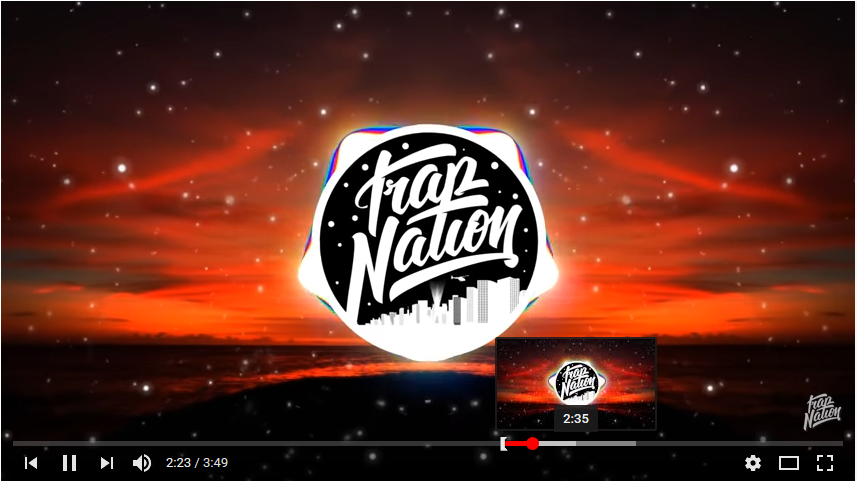
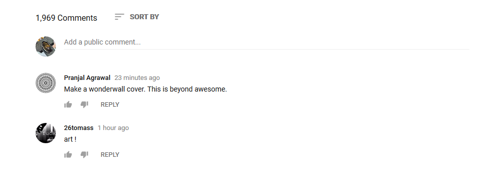

Youtube is site I use for many different purposes. It is one my main resources for finding tutorials on how to do things. From learning tips and tricks on using CSS to replacing the alternator on a 2001 Camery. It is a great resource for learning just because the database is so big that you could find almost anything on anything. Another example of it’s usage is a music player. I can make playlists and listen to that. Or if I like a song I can enable the autoplay feature so that when the video ends it plays the next related content which usually is a similar song/video, kind of like the radio feature for most music apps.
I don’t usually go straight to Youtube’s homepage. My user journey usually starts from googling a song name or tutorial and switching to the videos search results. Which leads to an important part of Youtube’s layout. The menu/navigation bar.
Main Navbar
Youtubes layout has the navigation bar at the top, with a hamburger menu icon which pops out more options (Home, Trending, Subscriptions, Library). Youtube has many features, but the navigation is pretty simple to use. For anyone who just likes searching for things it is important that the search bar is prominent and easy to find and it is sticky so the user is able search for things whenever they want. They also have access to their library or subscriptions in 2 clicks. I like the design because it is minimalistic. No words are used on the top bar, the icons are a little hard to decipher from a glance, but by hovering over the icon a tooltip text bar with a definition. Typography is simple and to the point. Each element and section is spaced efficiently and easily distinguishable.
The main section is split into 3 parts. The first and main section is the Video section.
Video Section
This section contains the video, video information, user options for the video and a subscription button. It is really easy to add a video to a playlist or share the video with a friend.
Top status bar

The actual media player also has great user interface and experience in itself. To list some things I like: Controls are hidden when mouse is not in the frame, icons are self explanatory and intuitive with universally used. Able to hover over time bar and view a screenshot of specific time. And different viewing modes to enhance the experience.
Video preview time section
The second section is the related videos/playlist
Playlist and related videos

Here the user can see related videos. The option for autoplay is recognizable and the next video is visible at the top. If the user is playing a video from their playlist it is grouped by the grey bar next to the video with the related videos stacked below it. It can also be pushed below the video next to the video information and comments in theater mode found in the media player. The last section is the comment section.
Comments
